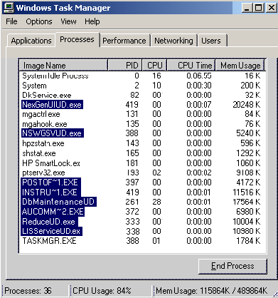
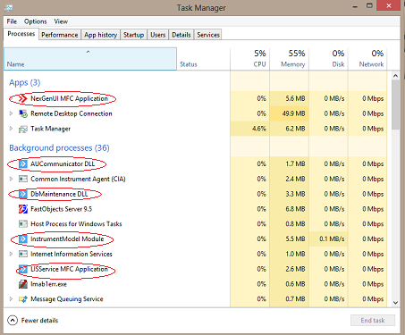
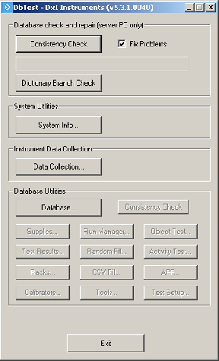
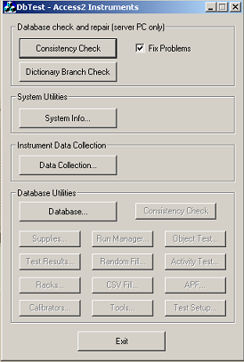

This procedure describes how to check and correct inconsistencies in the DxI and Access2 database. Not all database inconsistencies can be corrected using this procedure.
If you have not already done so, exit the console user interface and make a local copy of the database.
Note: Poet Object Server (DxI Software 5.2 and below or Access2 Software 3.4.2 and below ) and Fast Objects Server (DxI Software 5.3.1 and above or Access2 Software 3.4.3 and above) are the same objects server running the database. Fast Objects Server replaces Poet Object Server on the latest DxI and Access2 system software.
For Windows XP console PC with DxI Software 5.2 and below or Access2 Software 3.4.2 and below:
From the
Main Menu in the user interface, select
[Alt] + [F4]
Enter the password
Access2Support observing upper and lower case. The PC will exit to the Windows desktop.
Select the poet server icon near the clock at the bottom right corner of the display.
Select the
X at the upper right corner of the poet server window and
OK to the shutdown server pop-up.
Select
Start> Programs> Windows Explorer to open Windows Explorer.
Navigate to the
C:\NexGen\Console folder (for DxI) or
C:\NexStep\PC folder (for Access 2).
Right-click on the
DRW folder and select
Copy.
If errors occur during the copy, then:
Use the Task Manager to end any applications which may prevent copying the database.
A software error may have locked the database. Select the Poet Object Server icon at the bottom right corner of the display near the system clock. Shut down the server and close any error messages. Restart the server by selecting
Start > Run, typing
ptserv32.exe on the text line, and selecting
OK.
Right-click on the
Console (DxI) or
PC (Access2) folder, and select
Paste to make a Copy of the DRW folder.
Close Windows Explorer when finished making the copy.
For Windows 8 Mini PC with DxI Software 5.3.1 and above or Access2 Software 3.4.3 and above:
Note: DxI Software 5.3.1 and Access2 Software 3.4.3 are compatible with Windows XP console PC. If either software was installed on the Windows XP console PC, then follow the Windows XP section to make a copy of the database.
From the Main Menu, press
[Alt] + [F4] and then enter
Access2Support to exit the user interface.
Shut down the Fast Objects Server.
Press
Ctrl + Alt + Delete and select
Task Manager or right click on the task bar and select
Task Manager.
In the
Task Manager box, click on
Processes, select
FastObjects Server and click on
End Task in the bottom corner of the box.
Press
Windows key and select
File Explorer icon or type
file explorer and open the program.
Navigate to the
C:\NexGen\Console folder (for DxI) or
C:\NexStep\PC folder (for Access 2).
Right-click on the
DRW folder and select
Copy.
If errors occur during the copy, then:
Use the Task Manager to end any applications which may prevent copying the database.
A software error may have locked the database. Shut down the Fast Objects Server and close any error messages. Restart the server by pressing
Windows key and select the
Fast Objects Server icon or type
run, open the Run program, typing
ptserv32.exe on the text line, and selecting
OK.
Right-click on the
Console (DxI) or
PC (Access2) folder, and select
Paste to make a
Copy of the DRW folder.
Close File Explorer when finished making the copy.
If necessary, use the Task Manager to end any other application that might prevent the consistency check from running.
For Windows XP console PC with DxI Software 5.2 and below or Access2 Software 3.4.2 and below:
Press [Alt] + [F4], and then enter the password
Access2Support to exit the user interface.
Press
Ctrl + Alt + Delete
keys together and select
Task Manageror select
Start > Run, type
taskmgr in the
Run dialog box, and then seleck
OK.
From the Task Manager window, select
Processes tab.
Determine if any of these processes are running in the Task Manager.
DbMaintenanceUD
AUCOMM~.EXE
INSTRU~.EXE
LISServiceUD.exe
NexGenUIUD.exe or NexStepUIUD.exe
ReduceUD.exe
NSWGSVUD.exe
POSTOF~.EXE
Figure 117: Windows XP Task Manager: DxI System

For each process that is running, select the process, and then select
End Process > Yes.
Close the
Task Manager window.
For Windows 8 Mini PC with DxI Software 5.3.1 and above or Access2 Software 3.4.3 and above:
Note: DxI Software 5.3.1 and Access2 Software 3.4.3 are compatible with Windows XP console PC. If either software was installed on the Windows XP console PC, then follow the Windows XP section to open Task Manager application.
Press
[Alt] + [F4], and then enter the password
Access2Support to exit the user interface.
Press
Ctrl + Alt + Delete keys together and select
Task Manager or press
Windows key, type
Task Manager and open the program.
From the Task Manager window, select the Processes tab.
Determine if any of these processes are running in the Task Manager.
NexGenUI MFC Application or NexStepUI MFC Application
AUCommunicator DLL
DbMaintenance DLL
InstrumentModel Module
LISService MFC Application
PostOffice DLL
Reduce MFC Application
Screen TransitionTool MFC Application
Figure 118:
Windows 8 Task Manager: DxI System

For each process that is running, select the process, and then select
End Task.
Close the
Task Manager window.
Shut down the database objects server.
For Windows XP console PC with DxI Software 5.2 and below or Access2 Software 3.4.2 and below:
Select the poet server icon near the clock at the bottom right corner of the display.
Select the
X at the upper right corner of the poet server window and
OK to the shutdown server pop-up.
For Windows 8 Mini PC with DxI Software 5.3.1 and above or Access2 Software 3.4.3 and above:
Note: DxI Software 5.3.1 and Access2 Software 3.4.3 are compatible with Windows XP console PC. If either software was installed on the Windows XP console PC, then follow the Windows XP section to exit the Fast Objects Server.
Press
Ctrl + Alt + Delete and select
Task Manager or right click on the task bar and select
Task Manager.
In the
Task Manager box, click on
Processes, select
FastObjects Server and click on
End Task in the bottom corner of the box.
Open the DbTest application and run Consistency Check.
For Windows XP console PC with DxI Software 5.2 and below or Access2 Software 3.4.2 and below:
Note: Launching the DbTest application will automatically restarting the Poet Server. Manually launching the server is not required.
Select
Start > Programs > NexGen (or Access 2) > DbTest to open the DbTest application.
Enable the
Fix Problems option, and then select
Consistency Check.
Figure 119: DxI DbTest: Consistency Check

Note: The consistency check typically takes less than 10 minutes to complete (runs displaying the progress status).
Figure 120: Access2 DbTest: Consistency Check

Note: The consistency check typically takes less than 10 minutes to complete (runs without displaying the progress status).
Select
OK to the pass or fail message that is displayed at the end of the consistency check.
If the check fails, then run the consistency check a second time.
If the check fails after running the second consistency check, contact Technical Support as necessary. Review the DxI Event Log for specific failure information.
Select
Exit to close the DbTest program.
For Windows 8 Mini PC with DxI Software 5.3.1 and above or Access2 Software 3.4.3 and above:
Note: Launching the DbTest application will automatically restarting the Fast Objects Server. Manually launching the server is not required.
Note: DxI Software 5.3.1 and Access2 Software 3.4.3 are compatible with Windows XP console PC. If either software was installed on the Windows XP console PC, then follow the Windows XP section to run Consistency Check.
Press
Windows key, select DbTest UD icon or type
DbTest
and open the program.
Enable the
Fix Problems option, and then select
Consistency Check.
Figure 121: DxI DbTest: Consistency Check
Note: The consistency check typically takes less than 10 minutes to complete (runs displaying the progress status).
Figure 122: Access2 DbTest: Consistency Check
Note: The consistency check typically takes less than 10 minutes to complete (runs without displaying the progress status).
Select
OK to the pass or fail message that is displayed at the end of the consistency check.
If the check fails, then run the consistency check a second time.
If the check fails after running the second consistency check, contact Technical Support as necessary. Review the DxI Event Log for specific failure information.
Select
Exit to close the DbTest program.
Launch the user interface and verify no database errors are recorded.
For Windows XP console PC with DxI Software 5.2 and below and Access2 Software 3.4.2 and below:
Select
Start > Programs > NexGen or Access2 > NexGenUI UD or Access2 to launch the user interface.
Navigate to the
Sample Manager screen, and verify that the test is not running.
Verify that there are no database errors recorded in the event log after the consistency check has completed successfully.
Note: If new database errors are posted, refer to software troubleshooting database error messages.
For Windows 8 Mini PC with DxI Software 5.3.1 and above and Access2 Software 3.4.3 and above:
Note: DxI Software 5.3.1 and Access2 3.4.3 are compatible with Windows XP console PC, if either software was installed on the Windows XP console PC, then follow the Windows XP section to launch the user interface.
Double click on the
NexGen Application or Access2 Application shortcut on desktop, or press
Windows key and select
NexGenUI UD or NexStepUI UD icon, or type
nexgenui or nexstepui and open the program.
Navigate to the
Sample Manager screen, and verify that the test is not running.
Verify that there are no database errors recorded in the event log after the consistency check has completed successfully.
Note: If new database errors are posted, refer to software troubleshooting database error messages.
If the consistency check has completed successfully, delete the local copy of the database.
For Windows XP console PC with DxI Software 5.2. and below and Access2 Software 3.4.2 and below:
Select
Start> Programs> Windows Explorer to open Windows Explorer.
Navigate to the
C:\NexGen\Console folder (for DxI) or
C:\NexStep\PC folder (for Access 2).
Right click on the
Copy of DRW folder and select
Delete.
Select
Yes to confirm deletion.
Close Windows Explorer when finished deleting.
For Windows 8 Mini PC with DxI Software 5.3.1 and above and Access2 Software 3.4.3 and above:
Note: DxI Software 5.3.1 and Access2 3.4.3 are compatible with Windows XP console PC, if either software was installed on the Windows XP console PC, then follow the Windows XP section to delete the copy of the database.
Press
Windows key and select
File Explorer icon or type
file explorer and open the program.
Navigate to the
C:\NexGen\Console folder (for DxI) or
C:\NexStep\PC folder (for Access 2).
Right click on the
Copy of DRW folder and select
Delete.